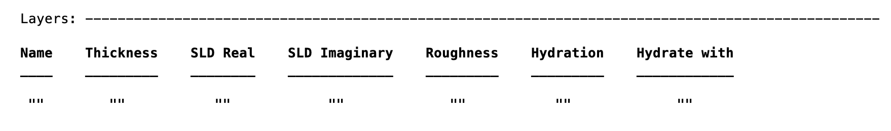

Adding the Imaginary Refractive Index
In contrast to RasCAL1, RAT allows the inclusion of the imaginary part of the refractive index to the project. The exact method of doing this varies according to the calculation type, but at the project top-level, the method of enabling it is always the same. If the project is called ‘problem’, then:
problem.absorption = true;
How this is then handled depends on the calculation type.
Standard Layers Models
The imaginary refractive index appears as a new column in the ‘Layers’ block..
{kind=link}
Then, the value of this column are set (from the Parameters block) in the same way as all the other cells in the table.
Custom Models
For custom models, an extra column is also required in the output from the custom function.
So, for example, in the /examples/miscellaneous/absorption folder, there is a Custom Layers example including absorption. In this example (a bilayer on a gold surface) an imaginary SLD is required for the metal layers:
GOLD = [goldThick goldSLD goldISLD goldRough];
alloyUp = [alloyThick alloySLDUp alloyISLDUp alloyRough];
alloyDown = [alloyThick alloySLDDown alloyISLDDown alloyRough];
but there is no imaginary component expected for the organic layers (but the extra column is still necessary).
BILTAILS = [thickTail sldTail 0 bilayerRough];
BILHEAD = [thickHead sldHead 0 bilayerRough];
BILME = [thickMe sldMe 0 bilayerRough];
For custom XY models, it is necessary to construct a profile which represents the imaginary SLD across the sample, and this then appears as am extra column in the output:
output = [X1 SLD1 SLD_im_1
X2 SLD2 SLD_im_2
...
Xn SLDn SLD_im_n] ;